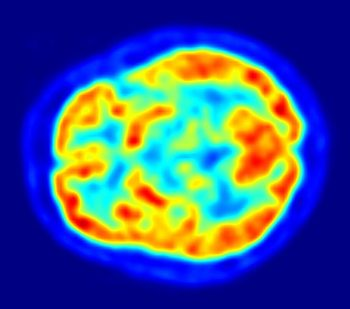
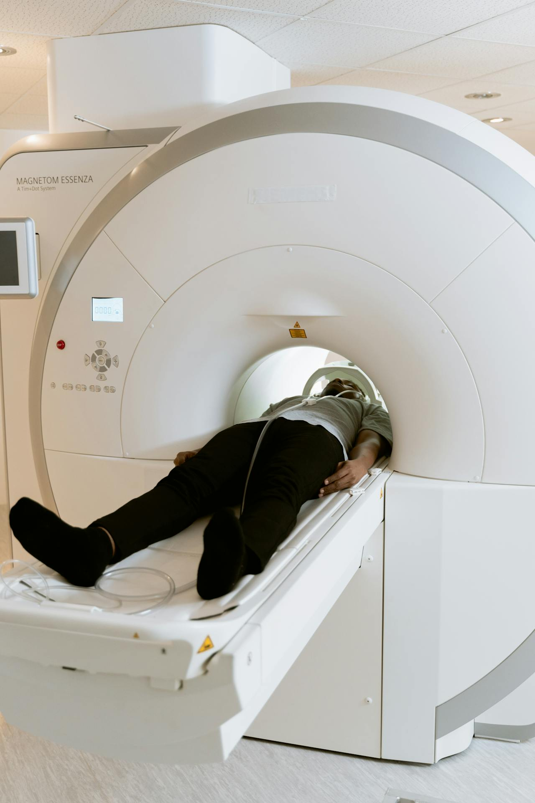
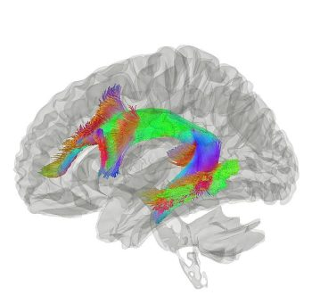
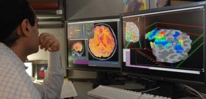

4.5: Tools of Cognitive Neuroscience – Brain imaging, PET and MRI
Many imaging technologies can capture detailed inner images of the brain. In the 1970s, the development of computerized tomography (CT) scans allowed non-invasive imaging of the living brain using X-rays. CT scans are rarely used today for research purposes due to radiation exposure and relatively low image resolution.
Positron Emission Tomography (PET) scans are a powerful way to image brain activation (as opposed to brain structure). The PET scanner detects a radioactive substance that is injected into the bloodstream of the participant just before or while they perform a task (e.g., adding numbers). Because active neuron populations require metabolites, more blood flows into active regions bringing with it more radioactive substances. PET scanners detect the injected radioactive substance in specific brain regions, allowing researchers to infer that those areas were active during the task. PET scans are not common in biopsych research because they require the ability to work with radioactive materials and expose subjects to low-levels of radiation. However, PET is a powerful tool that provides the unique capability of identifying the distribution of particular molecules, like neurotransmitters or receptors, in the brain.

Magnetic Resonance Imaging
The most commonly used brain-imaging modality today is Magnetic Resonance Imaging (MRI). An MRI machine can produce different types of scans: high-resolution images of brain structure (structural MRI or sMRI) and brain function (functional MRI or fMRI). MRI scanners may be expensive, noisy, and claustrophobic to some, but they are harmless and painless and are powerful and prevalent tools for illuminating brain structure and function.
MR scanners use a strong magnetic field that is 60,000 times stronger than the Earth’s magnetic field. As a person lies very still in the scanner, the magnetic field forces protons in their body to align. Pulsations of low-energy radio frequencies cause the protons to change their spin. As the radiofrequency is turned off, these protons return to their aligned state and give off energy that is detected by MRI sensors. The timing and amount of energy released as protons realign with the magnetic field vary based on tissue type. This variation allows clear differentiation between the brain’s white matter, gray matter, cerebrospinal fluid, bone, blood, and other tissues.

Structural magnetic resonance imaging (sMRI) creates detailed images of brain structure with millimeter resolution. The high-resolution 3D images might show the brain’s gray matter and white matter in voxels (i.e. like 3D pixels) that are 1mm x 1mm x 1mm cubes. Researchers may use these images to compare the size of brain structures across different groups (for example, are areas associated with pleasure smaller in individuals with depression, or are areas controlling finger movements larger in string musicians compared to vocalists or trombonists?). These structural images can also enhance the spatial accuracy of functional magnetic resonance imaging (fMRI) measurements.
Diffusion Tensor Imaging (DTI) is a variant of structural Magnetic Resonance Imaging that focuses on myelinated axon pathways in the brain. DTI imaging is highly sensitive to the movement of water molecules in the brain. Because water moves differently along myelinated axons in the brain, DTI can map out the large white matter tracts, that, like superhighways, connect distant brain regions (e.g., the corpus callosum, a white matter fiber tract that connects right and left cerebral hemispheres, or the arcuate fasciculus, a bundle of axons that connects Broca’s area and Wernicke’s area, see Figure 10). DTI can be used to examine white matter integrity in diseases such as Multiple Sclerosis or to observe brain plasticity after learning a new skill like juggling.

Functional MRI (fMRI) uses the same MR scanners, but instead of capturing a high-resolution snapshot of brain structure, it measures brain “function” or activation while a subject performs some task. As a brain region becomes more active, it uses oxygen and causes an inflow of oxygenated blood to that region over the following few seconds. fMRI measures the change in the concentration of oxygenated hemoglobin, which is known as the blood-oxygen-level-dependent (BOLD) signal. From the BOLD signal, researchers infer neuronal activation in that brain region (note that fMRI does not directly measure the neuronal activity). Because cerebral blood flow is coupled with neural activation, researchers can map brain activation while people in the scanner perform tasks like reading, speaking, viewing images of faces or places, recalling memories, etc. In this way, fMRI provides evidence of localization of function and which areas are active during specific tasks. fMRI has high spatial resolution and the activation maps in a typical fMRI study consist of cubic voxels that are a few mm on each side. However, the temporal resolution of fMRI is quite poor and it typically takes a snapshot of brain activation averaged over a 2- or 3-second window.
In addition to measuring BOLD responses while subjects perform some task, fMRI can measure subjects’ brain activation over many minutes while they perform no task (so-called “resting state scans” wherein they might lay in the brain scanner for 10 minutes while instructed “don’t do anything in particular”). Such recordings have shown surprisingly correlated spontaneous fluctuations of brain regions that can be far apart from each other in the brain. Regions with highly correlated activation work together in the same large-scale distributed network. The brain has several large-scale networks including sensorimotor, attention, control, default mode, and limbic networks.

While fMRI is popular and powerful and people find the pretty images convincing, they are correlational and don’t fully explain the causal role of specific brain regions in determining mental processes. This is an important example of why it is essential to rely upon converging evidence—as an example, correlational fMRI data coupled with causal experimental data from lab animals. Also to address some of the limits of correlational research, researchers are developing techniques that can directly modulate brain activity.
Media Attributions
- PET Image © Wikimedia is licensed under a Public Domain license
- MRI Scanner © Mart Production via. Pexels is licensed under a CC0 (Creative Commons Zero) license
- Arcuate Fasciculus © Wikimedia is licensed under a CC BY-SA (Attribution ShareAlike) license
- Researcher Test © Wikimedia is licensed under a CC BY-SA (Attribution ShareAlike) license


A neuroimaging technique that measures brain activity by detecting the presence of a radioactive substance in the brain that is initially injected into the bloodstream and then pulled in by active brain tissue.
A neuroimaging technique that uses the magnetic resonance scanner to create high resolution images of brain structure. The images show brain anatomy, including location, size, and integrity of white and gray matter (but does not reveal brain function or neuronal activity).
A variant of Magnetic Resonance Imaging that can non-invasively reveal unique information of white matter microstructures and axonal pathways within the central nervous system.
Functional magnetic resonance imaging (fMRI): A neuroimaging technique that infers brain activation by measuring changes in oxygen levels in the blood.
A term that refers to how small the elements of an image are; high spatial resolution means the device or technique can resolve very small elements; in neuroscience, it describes how small a structure in the brain can be imaged.
A term that refers to how small a unit of time can be measured; high temporal resolution means capable of resolving very small units of time; in neuroscience, it describes how precisely in time a process can be measured in the brain.